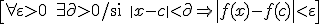
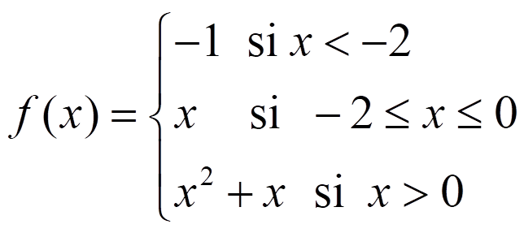
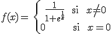
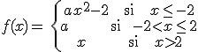

Una función f, definida en un intervalo abierto centrado en a, se dice que es continua en x = a si:
O:

\[\forall \varepsilon >0\quad \exists \partial >0/\text{si }\left| x-c \right|<\partial \Rightarrow \left| f(x)-f(c) \right|<\varepsilon \]
En caso contrario, se dice que f es discontinua.
Ejemplo:
 f es continua en R-{-2}
Propiedades. Si f y g son continuas en a y k Є R:
- k·f es continua en a
- f±g es continua en a
- f·g es continua en a
- f/g es continua en a, si g(a)≠0
- Si f es continua en a y g en f(a) →g˚f es continua en a
Ejercicios:
1.-¿Es la función

f(x)=\left\{ \begin{align} & \frac{1}{1+{{e}^{\frac{1}{x}}}}\text{ si }x\ne 0 \\ & 0\text{ si }x=0 \\ \end{align} \right.
continua en x = 0?
2.- Sea la función:

f(x)=\left\{ \begin{align} & a{{x}^{2}}\text{-2 si }x\le -2 \\ & a\text{ si }-2<x\le 2 \\ & x\text{ si }x>2 \\ \end{align} \right.
a) Encuentra el valor de a que hace que f sea continua en x = -2
b) Para ese valor de a, ¿es la función continua en x = 2?
Soluciones: 1.- Sí; 2.- a) a = 2/3; b) No